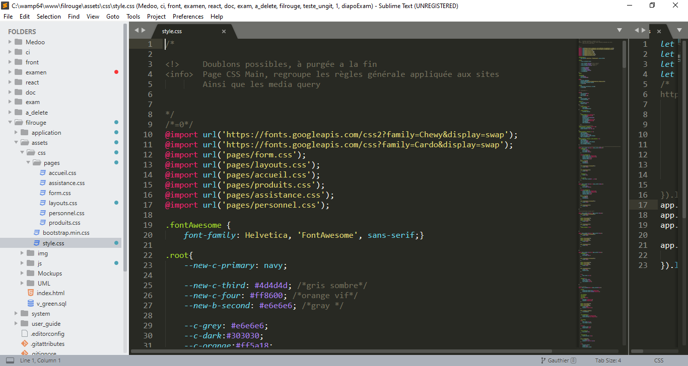

Pour le fil rouge j'ai utiliser principalement Bootstrap, un frameworks CSS assez connue dans le développement pour sa simplicitée.
Je me sert également de plusieurs feuilles de styles afin de complétée la mise en page au besoin.

Je laisse parfois quelques commentaires dans le but de me rappelais les tâches à effectuée. Ces commentaires ne font partie d'aucune norme, le =0 est un raccourcie un peu comme une ancre, cela me permet de parcourir la feuille de style avec Ctrl + F.
Habituellement je n'aime pas importée de cette façon les règles mais à mesure où le site à grandit, il me fallais trouver un moyen de morcelé les règles CSS.
Cotée ressources ce n'est pas top ce genre de méthode.
Etant donnée le nombre de ligne de CSS (un peu plus de 1000) j'ai selectionner que les morceaux interessant.
.fontAwesome {
font-family: Helvetica, 'FontAwesome', sans-serif;}
.root{
/* Déclaration des variables */
--new-c-primary: navy;
--new-c-third: #4d4d4d; /*gris sombre*/
--new-c-four: #ff8600; /*orange vif*/
--new-b-second: #e6e6e6; /*gray */
--c-grey: #e6e6e6;
--c-dark:#303030;
--c-orange:#ff5a18;
--c-orangeII: #b55500;
--c-blue:navy;
}
/* Un cas d'utilisation */
.wrap-detail .titre-detail a:hover{
color:var(--c-orangeII);
font-weight: 500;
transform:scale(1.05);
text-shadow:-2px 0 1px black;
}
Ici j'ai définit les couleurs et leurs nuances selon la charte graphique réclâmé, bien sûr les couleurs élémentaire comme le noir ou le blanc inutile de les préçisée mais, pour le reste s'appuyée ces variable me semblé une bonne idée.
/* Exemple 1 */
nav.row > ul:nth-child(1) > li:nth-child(3) > span, span.text-center {
color:white;
font-size:2rem;
font-weight:500;
}
/* Exemple 2 */
.wrap-produits .card:hover .face.revers2 {
transform:translateY(0);
border-radius:0;
}
/* Exemple 3 */
section .titre-assistance:before {
content:'♫';
pointer-events:none;
font-size:calc(100% + .75rem);
transform:skew(-8deg);}
Pour le premier exemple se qui est intéressant c'est le ciblage des selecteurs, ici je parcours le parent nav pour trouver ul, ensuite je demande de ciblée simplement la première balise ul ceci peu se faire de plusieurs façon là j'utilise une pseudo classe, une fois le ul trouver, je cible de la même façon son enfant en demandant son troisième élément. Enfin de ce troisième enfant je cherche sa balise span.
La virgule est une séparation cela permet d'appliquée d'autres selecteurs qui ont besoin de ces même règles.
span.text-center n'est pas un selecteur à double composition, span.text-center ne fais qu'un, de cette façon l'agent d'utilisateur chercheras toutes les balises possèdant au moins un selecteur text-center.
Conclusion: span .text-center et span.text-center sont différents, l'espace influe sur le résultat.
L' exemple montre qu'il est possible d'influencée un enfant en fonction de son parent, .card:hover indique que lorsque le curseur passe sur la balise avec le selecteur .card cela change les règles définit sur son enfant. l'enfant c'est face.revers2.
Ici on vois non pas une pseudo-classe mais un pseudo-élément, les pseudo-élément génére un élément ne faisant pas partie du flux / ou du DOM, cette balise fantôme est modifiable via le CSS et possède les règles de ces parents, ainsi ont peu définir une taille de police. Ces élément ont besoin d'un contenue pour existée.
Bootstrap c'est un Framework Frontent type Composant, en gros se sont des lignes de selecteurs définit avec des règles CSS. Boostrap est composée de deux partie: l'une est faite de CSS, l'autre de Jquery (une librairy CSS et JavaScript).
Bootstrap peut être utilisée de deux façon: soit directement à l'aide d'un serveur hébergeur aussi appelée CDN. Soit on peu le télécharger et le déposer dans un dossier de notre site, il faudras alors spécifier le path dans l'en-tête HTML pour s'en servir.
Bootstrap possède sa propre grille CSS, sa permet de composée un site de façon harmonieuse et responsive aux possibles, cette grille suportes 5 points fixes (breakpoints) :
tableau en px
| Points break | min-width | max-width |
|---|---|---|
| xs | inhérit | 575.9 |
| sm | 576 | 767.9 |
| md | 768 | 991.9 |
| lg | 992 | 1199.9 |
| xl | 1199 | inhérit |
inhérit pour héritage, Bootstrap se baseras sur les régles établies sur le conteneur. Pour évitée des marges de 15km ont peu faire ceci et forcée le conteneur à utilisée toute la longueur exploitable:
.container{
width:100%;
min-width:100%;
}
<form class="form-group col-sm-4" action="#" method="POST">
<label class="col-sm-12 pl-2" for="newsletter">Recevez
<span class="c-custom">nos ofres exclusives</span>
</label>
<div class="row ml-1 form-group ">
<input class="col-auto col-sm-12 col-md-12 col-lg-6 mr-1 form-control" type="text" placeholder="Entre votre adresse mail" id="newsletter">
<button type="submit" class="mt-sm-1 mt-lg-0 col-auto col-sm-12 col-md-6 col-lg-4 btn btn-custom">S'abonnez</button>
</div>
</form>
<hr class="d-sm-none d-sm-block">
| Le selecteur | Son comportement |
|---|---|
| row | ajoute une rangée, prend toute la largeur définit par le conteneur |
| form-group | composant propre à Bootstrap pour la mise en page des formulaires |
| form-control | composant propre à Bootstrap pour la mise en page des input |
| btn | composant propre à Bootstrap pour la mise en page des bouttons |
| btn-custom | équivaut btn-muted, button neutre et modifiée hors Bootstrap |
| col-1 | ajoute une colone, la grille de Bootstrap est composée de 12 colone par rangée |
| col-auto | s'adapte en fonction des colone déja présent dans la rangée |
| ml-1 | margin left a 1rem, si il n' as pas assez d'espace, alors cette règle est sans effet |
| d-none | l'élément obtient un display à none |
| d-block | l'élément obtient un display à block |
En fonction de la dimenssion de l'ecran, il est possible de déterminer le nombre de colone des éléments, pour sa il faut ajoutée des préfixes sur les selecteurs. Ainsi col-6 deviendras col-md-6 et ml-1 peut devenir ml-xl-1. Altérée ces selecteurs en fonctions des breakpoints permets de changer l'aperçue global d'un site.